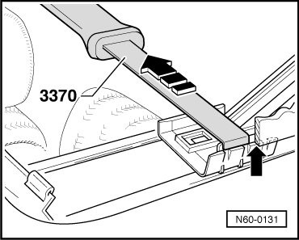

Sunroof With Glass Panel
Sunroof with Glass Panel
Wind Deflector
- Open sunroof completely, insert special hook (3370) between roof edge and wind deflector mounting, and loosen wind deflector mounting by pulling out of side locking tab (left/right).

- Using a screwdriver, pry out wind deflector mounting from guide rail (left/right).
- Remove the wind deflector.